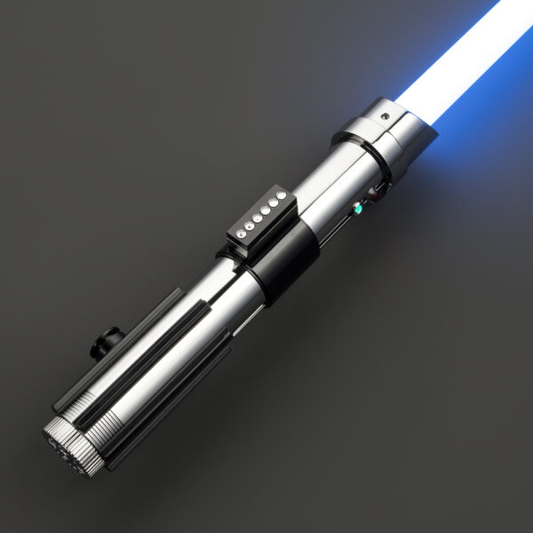
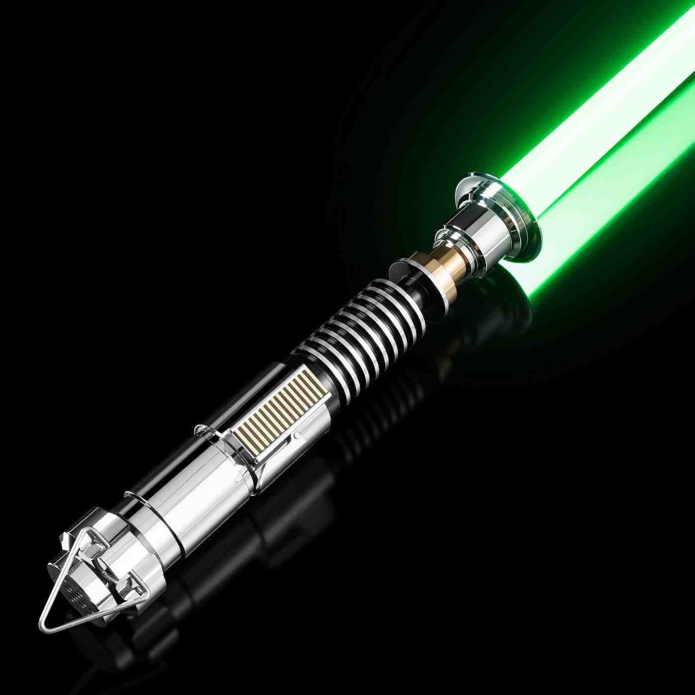
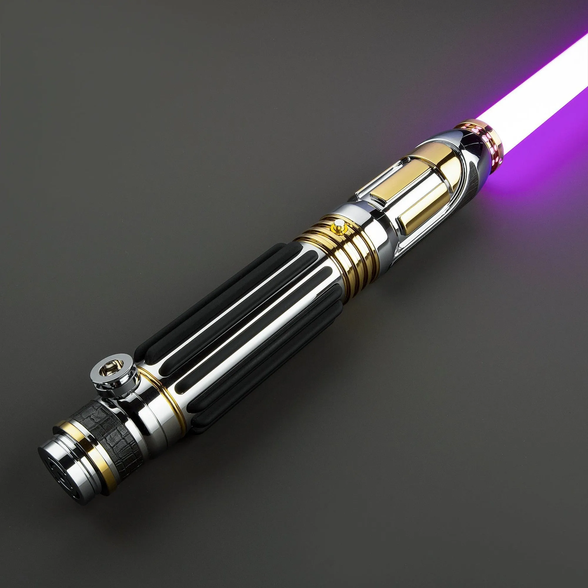
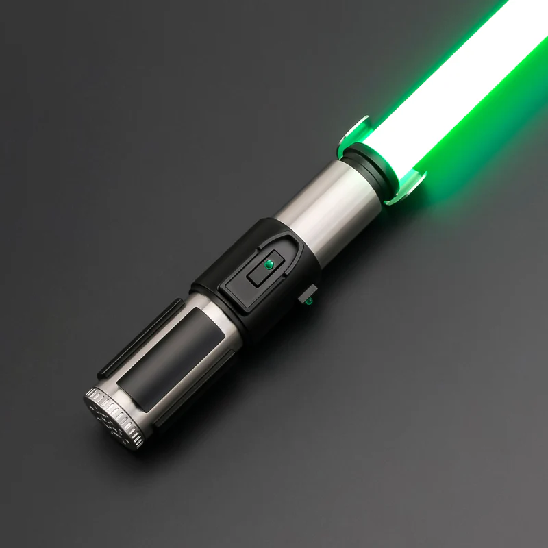
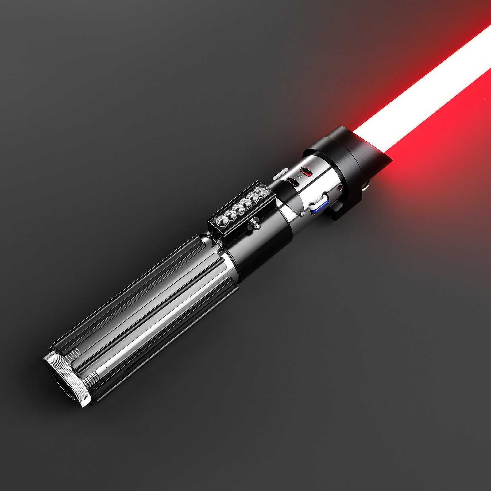
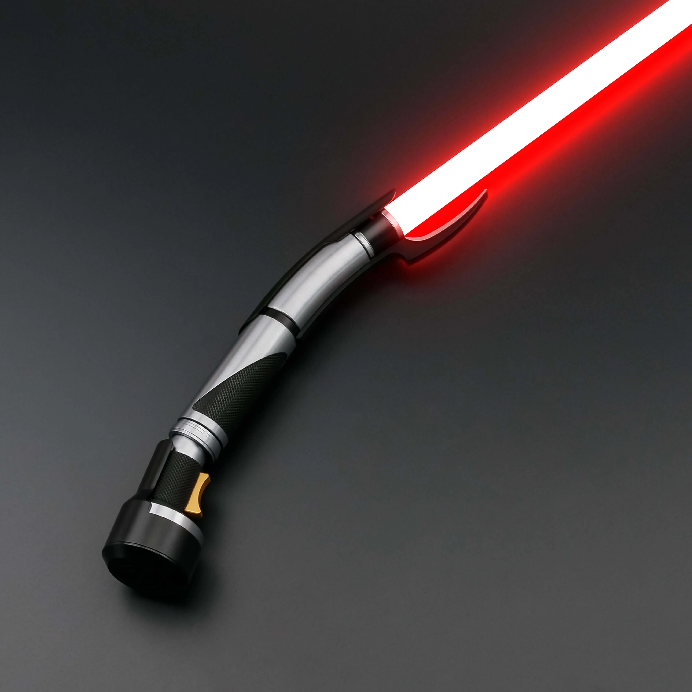
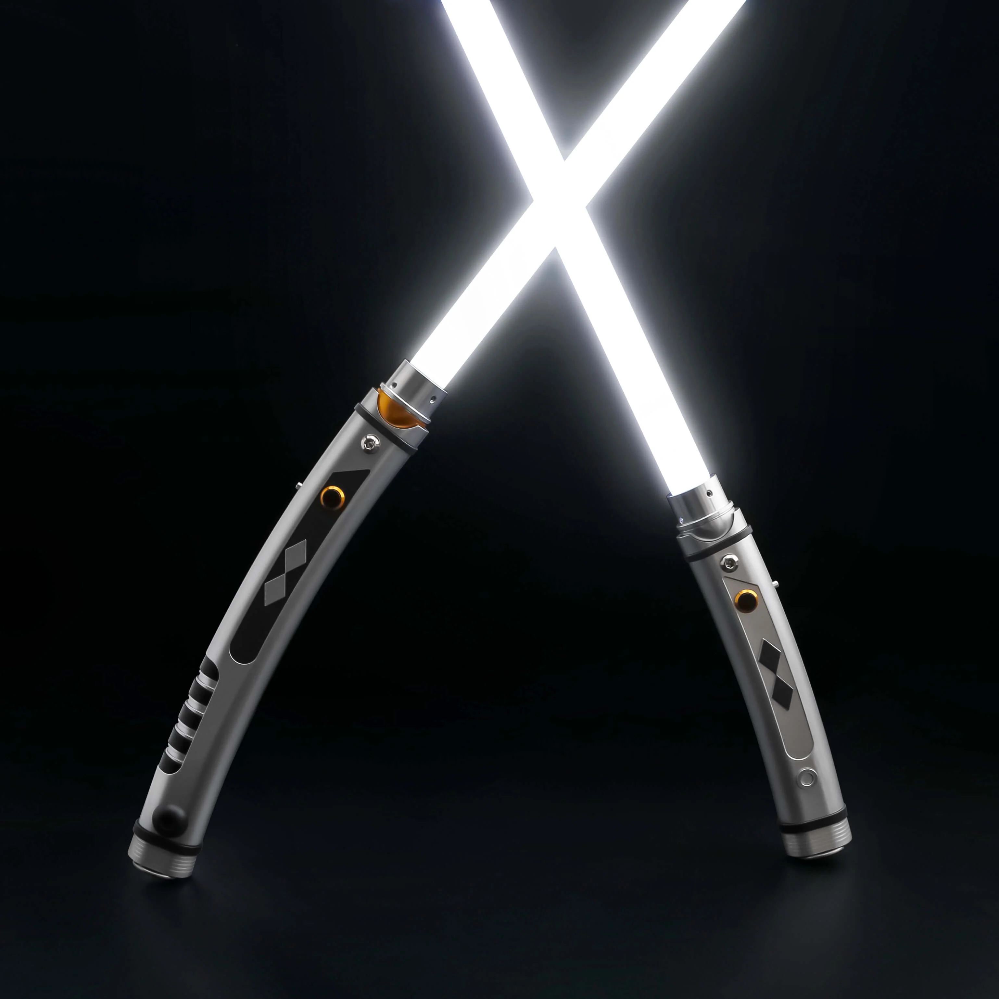
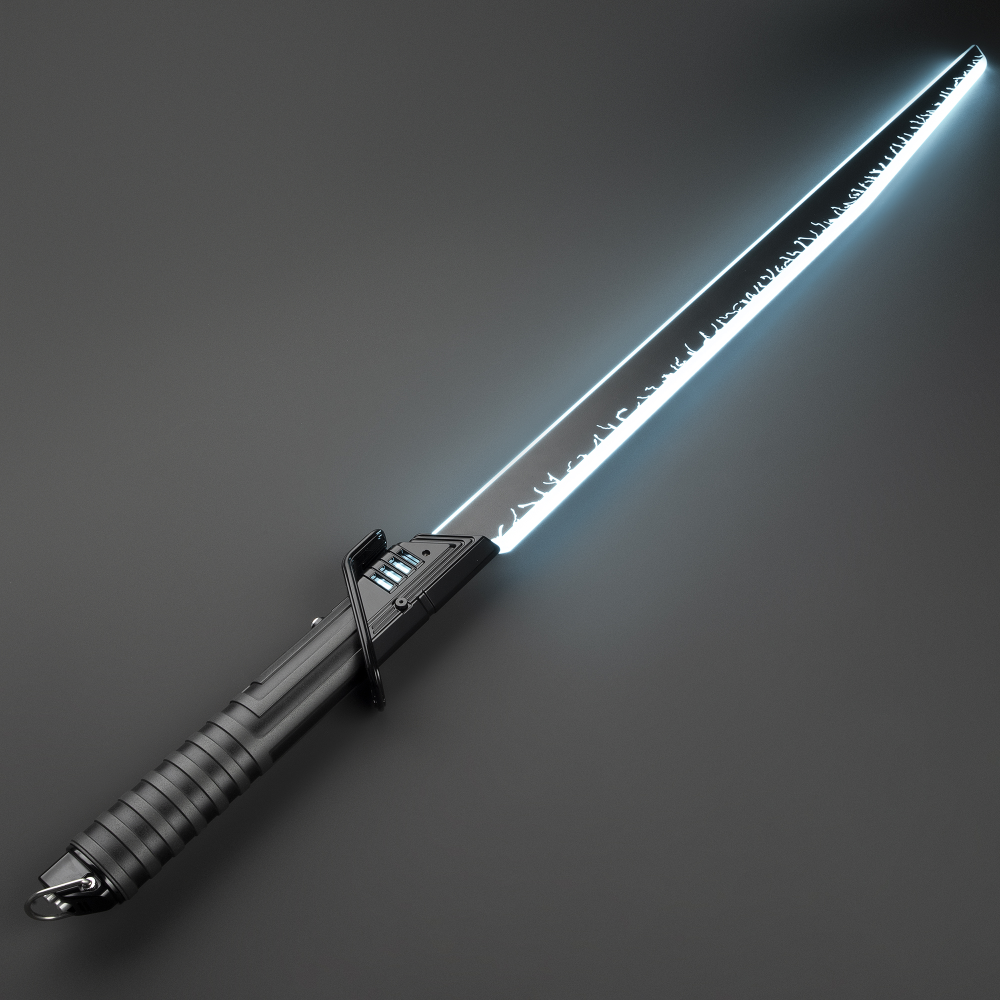

Skywalker lightsaber
A legendary blue lightsaber used by Anakin Skywalker, Luke Skywalker, and Rey.

Luke Skywalker's green lightsaber
A green lightsaber built by Luke Skywalker after losing his original weapon.

Mace Windu's lightsaber
A rare purple lightsaber used by Mace Windu, representing balance between light and dark.

Yoda's Lightsaber
A small green lightsaber used by Master Yoda, symbolizing Jedi wisdom and power.

Dart Vader's Lightsaber
A red Sith lightsaber used by Darth Vader, symbolizing the dark side of the Force.

Darth Maul’s Double-Bladed Lightsaber
A double-bladed red lightsaber used by Darth Maul for aggressive combat.

Count Dooku’s Curved Lightsaber
A red lightsaber with a curved hilt, used by Count Dooku for elegant dueling.

Ahsoka Tano’s White Lightsabers
Two white lightsabers used by Ahsoka Tano, representing independence from Jedi and Sith.

The Darksaber
A unique black lightsaber with a white blade, symbol of Mandalorian leadership